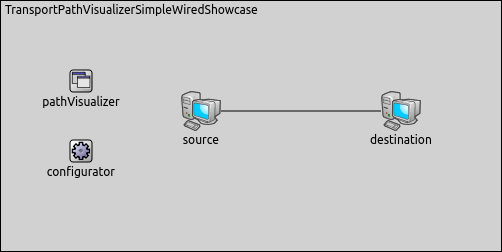
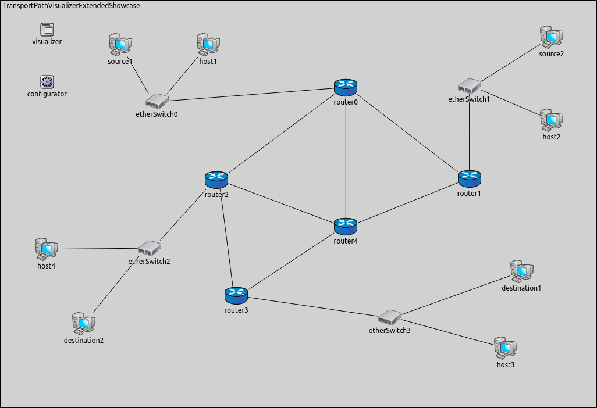
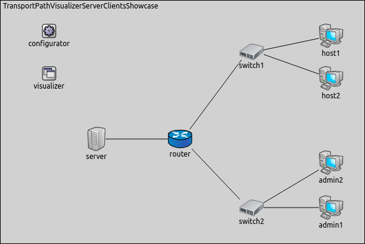

In complex networks it is difficult to trace the packets' path between processes on remote devices, because there are a lot of simultaneous communication and we have to pay attention to more than one message at the same time. The transport layer offers peer-to-peer and end-to-end connections between two processes on remote hosts. This layer is the first one which breaks the data in to smaller units called segments. Because a lot of data segments are traveling in the network simultaneously, it is really difficult to determine the data's path between two nodes.
The showcase consists of four simulation models, each demonstrating different features of transport path activity visualization.
INET version: 3.6
Source files location: inet/showcases/visualization/transportpathactivity
In INET, transport path activity can be visualized by including a TransportRouteVisualizer module in the simulation. Adding an IntegratedVisualizer is also an option, because it also contains a TransportRouteVisualizer. Transport path activity visualization is disabled by default, it can be enabled by setting the visualizer's displayRoutes parameter to true.
TODO:
when all segments are arrived
TransportRouteVisualizer currently observes packets that pass through the transport layer (i.e. carry data from/to higher layers), but not those that are internal to the operation of the transport layer protocol.
The activity between two nodes is represented visually by a solid polyline arrow which points from the source node to the destination node. The arrow appears after the first packet has been received, then gradually fades out unless it is refreshed by further packets. Color, fading time and other graphical properties can be changed with parameters of the visualizer.
By default, all packets, interfaces and nodes are considered for the visualization. This selection can be narrowed with the visualizer's packetFilter and nodeFilter parameters.
The following example demonstrates how to enable the visualization with its default settings. We visualize activity both in a wired and in a wireless network.
The wired and the wireless networks are very similar:


Both networks consist of two hosts.
The visualizer's type is TransportPathVisualizer.
The source has an UDPBasicApp application whose target is the destination host.
The packets are handled by an UDPSink application in the destination.
An additional line of configuration enables the visualization:
Here is what happens when the simulation is run:
A starting transmission is represented by a dotted blue line between the nodes in the wireless configuration. This is a default OMNeT visualization. At the same time a red arrow goes from the transmitter node towards the receiver node. This arrow displays a traveling packet between the INET modules. Under this arrow we can see the packet's type and name. This is not the same as the path arrow, because the TransportPathVisualizer displays that packets' paths which goes down to the transport layer in the source and goes up from the transport layer in the destination. For example ARP packets go up only to the third layer in the destination node, so they don't activate the visualizer. When a packet which is born in an upper layer than the fourth is forwarded from the destination's network layer, the visualizer draws a path between the nodes and an arrow is shown pointing from the sender towards the receiver. For example we can see this if an UDPBasicAppData packet is sent.
In this configuration we demonstrate how to display activity between certain nodes. Here is the network for this configuration:

We set up a non-trivial network with five routers, four switches and eight endpoints. The source nodes generate the traffic by UDPBasicApp, which is handled by an UDPSink application in the destination nodes. We adjust the visualization's fade out parameters, so the arrows don't disappear completely before the next packet arrives to the destination. Here is the configuration of the visualization:
When we start the simulation, this happens:
VIDEO
We can see two transport paths, one of them is between the source1 and the destination1, and the other one is between the source2 and the destination2.
It's possible to concentrate on one transport path activity. We show the traffic between only source1 and destination1 by using this line of configuration:
The filter includes the switches and the routers, because the packet flow goes through the intermediate network devices. The following video depicts what happens when we adjust the nodeFilter parameter:
VIDEO
Howewer there is transport path activity between both source-destination pair, the visualization displays activity only between source1 and destination1.
In this simulation we visualize the transport path activity of different applications by configuring the packetFilter parameter.
The network for this configuration is as follows: 
The network consists of a router, two switches and four hosts. The admin1, host1 and host2 have UDP applications. The admin1 has an UDPBasicApp which communicates with the server on port 22, symbolizing an SSH connection. The server handles it with an UDPSink application. The host1 and the host2 have a VideoStreamClient application which is handled by a VideoStreamServer in the server. The host1 has an additional UDPBasicApp, it symbolizes a TFTP connection. Its destination port is 69 in the server. The application is handled by an UDPEchoApp. Here is the configuration of the visualization:
Here is how this looks like:
VIDEO before we configure filter
To focus only one packet type, we configure the packetFilter.
Here is the result of this parameter setting:
VIDEO after we configure filter
Now, we can see only the video communication between host2 and the server and between host1 and the server.
This example only demonstrated the key features of transport path visualization. For more information, refer to the TransportRouteVisualizer NED documentation.